系统使用说明
大宗矿产集采平台（mine_platform_demo）· 图文操作手册 · 2026-11-08
1. 系统概述与角色
本平台面向大宗矿产（铁矿粉等）的集中采购场景，串联 钢厂（需方）→ 供应商（供方）→ 承运商 三方，覆盖需求申报、询价报价（密封报价+揭示比价）、议价定标、订单确认、合同签署（电子留痕）、物流调度、到货质检、结算付款、归档导出的全生命周期。
| 角色 | 演示账号 | 核心职责 |
|---|---|---|
| 平台管理员 | 13800000000 / demo123456 | 企业准入审核、品种与基准价维护、状态字典、操作日志、单据总览 |
| 钢厂（需方） | 13900000002 / demo123456 | 需求申报、发起询价、揭示比价、议价、定标、合同签署（需方）、物流方案、质检、结算确认、付款登记 |
| 供应商 | 13900000001 / demo123456 | 查看脱敏需求池、密封报价、议价应答、订单确认、合同签署（供方）、结算确认 |
| 承运商 | 13900000003 / demo123456 | 接单、发运/到达回填、运单签收配合 |
💡 所有账号均为演示基线账号，密码统一
demo123456。服务地址：http://127.0.0.1:8000。2. 登录与企业注册
2.1 登录
1
打开
http://127.0.0.1:8000，输入手机号与密码。2
点击「登录」，按角色自动进入对应首页（钢厂→需求管理；管理员→运营看板）。

图 2-1 登录页（含企业注册入口）
⚠️ 密码错误会 toast「用户名或密码错误」并被拦截，不会进入系统。
2.2 企业注册（新企业入驻）
1
登录页点击「企业注册」，填写企业名称、统一社会信用代码、角色（钢厂/供应商/承运商）、联系人信息。
2
上传营业执照（支持 pdf/图片），提交后进入「待审核」。
3
平台管理员审核通过后，即可用注册手机号登录。
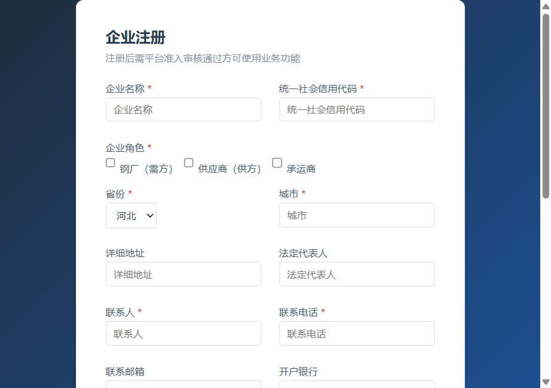
图 2-2 企业注册表单（含执照上传）
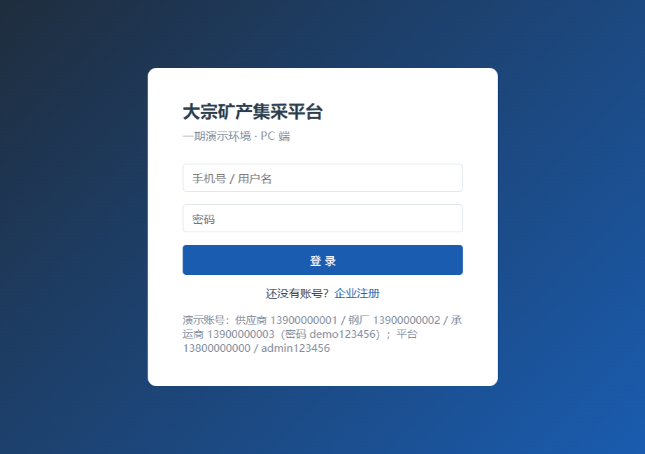
图 2-3 注册提交成功（待审核）
3. 平台管理员操作
3.1 企业准入审核
1
「企业准入」列表查看待审核企业，点击「审核」。
2
填写审核意见，选择「通过」/「驳回」。通过后企业状态变为「已准入」。
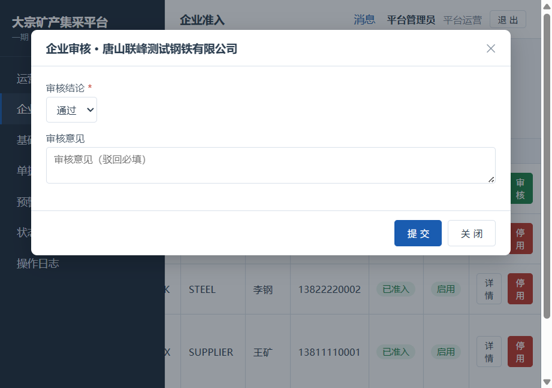
图 3-1 企业审核弹窗
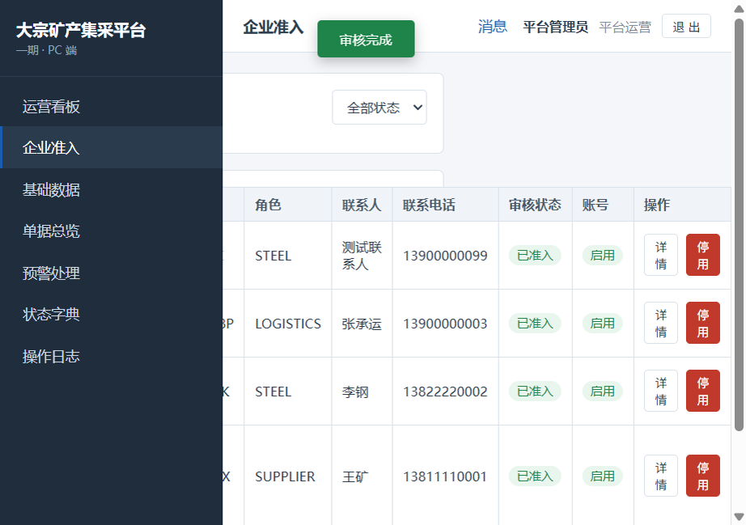
图 3-2 审核通过后企业列表
3.2 品种与基准价维护
1
「基础数据→品种管理」新增品种（如 E2ELUMP 块矿）。
2
「基准价管理」录入当日基准价（同日重复录入为更新留痕，不新增行）。
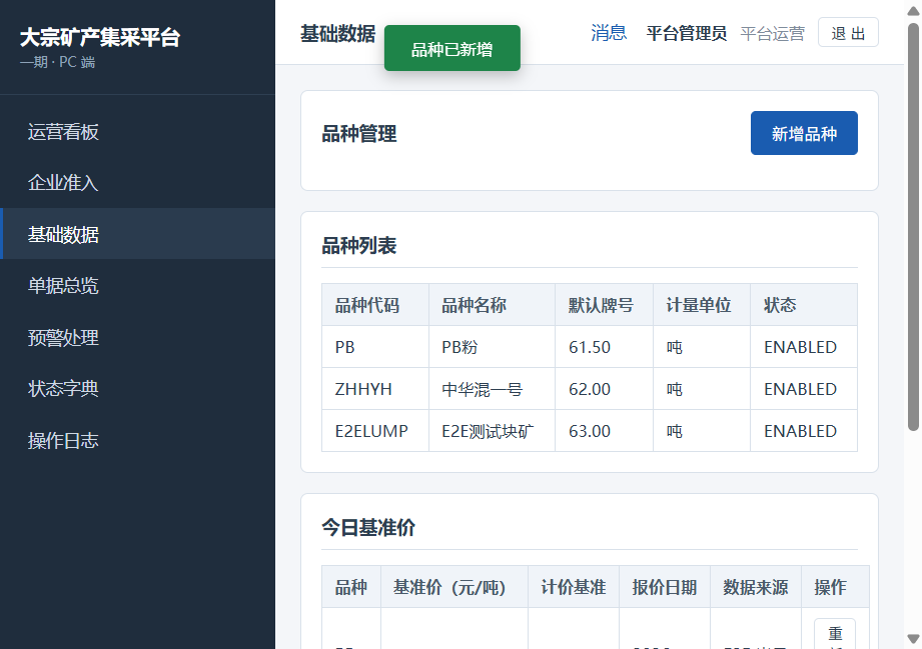
图 3-3 新增品种成功
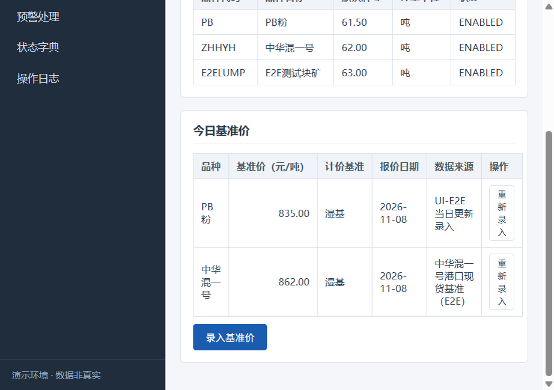
图 3-4 PB粉基准价当日更新（830.50→835.00）
3.3 状态字典与操作日志
「状态字典」展示各业务单据的状态流转矩阵；「操作日志」记录全链 REGISTER/LOGIN/CREATE/UPDATE/STATUS 留痕，支持按表/时间检索。
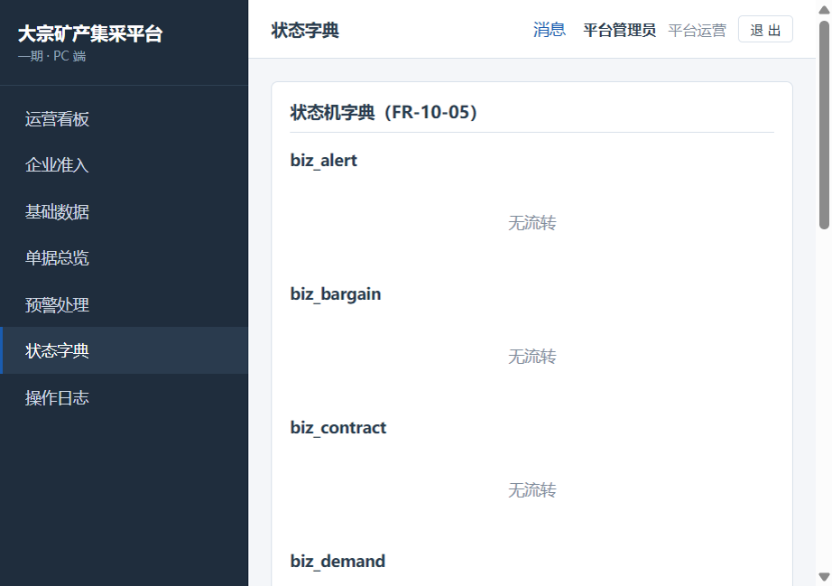
图 3-5 状态字典页
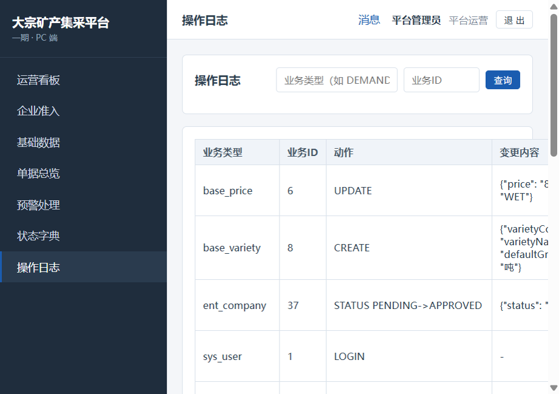
图 3-6 操作日志页
4. 钢厂操作（需求→询价→定标→合同→物流→结算）
4.1 需求申报（全生命周期）
1
「需求管理→新建需求」：填写需求名称、交货方式（港口FOB/港口汽运/厂内自提）、交货地点、期望到货起止、结算方式，添加品种明细（品种/牌号/数量/单价/溢短装）。
⚠️ 添加明细后须重新选择品种确认绑定，再保存（否则会被"明细需完整填写品种/牌号/数量"拦截）。
2
保存草稿（DRAFT）→ 提交（SUBMITTED）→ 需要时可撤回（WITHDRAWN，重提生成新版本 v2）→ 不再执行可关闭（CLOSED）。
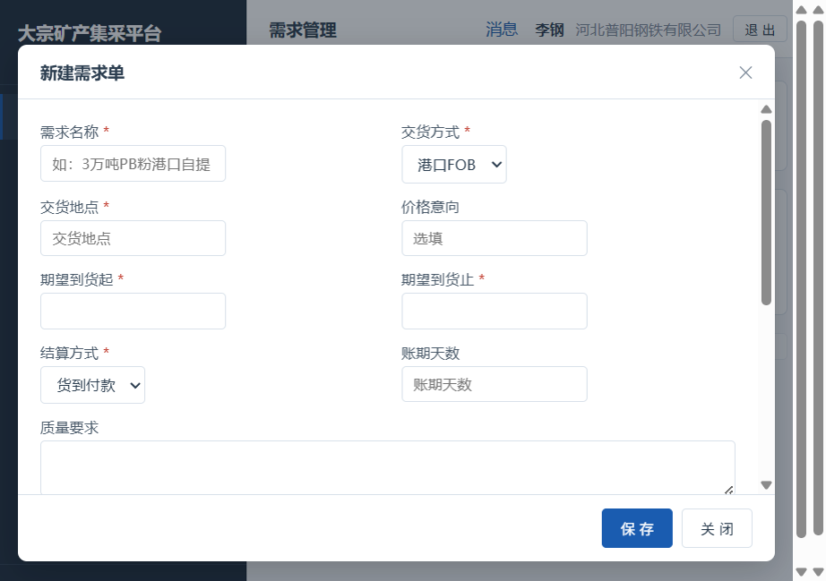
图 4-1 新建需求弹窗
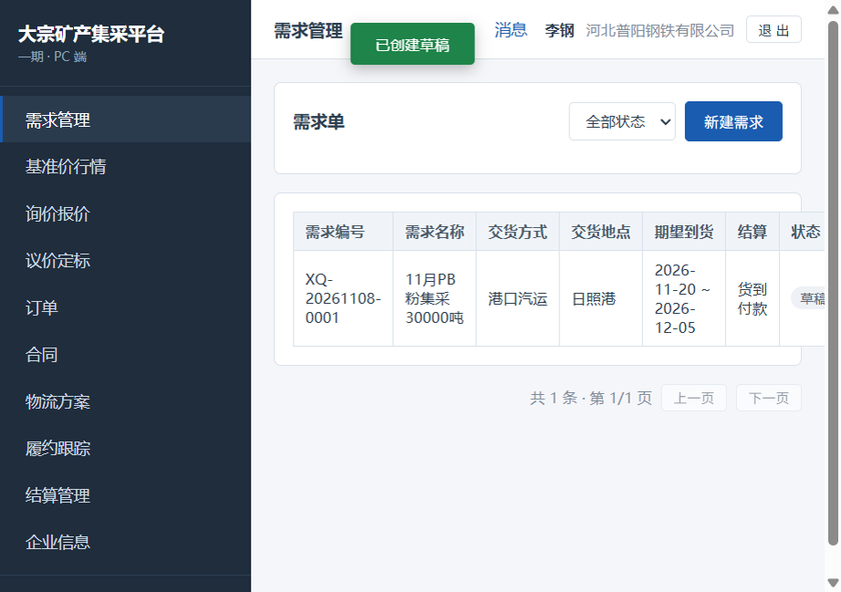
图 4-2 草稿保存成功（XQ-20261108-0001）
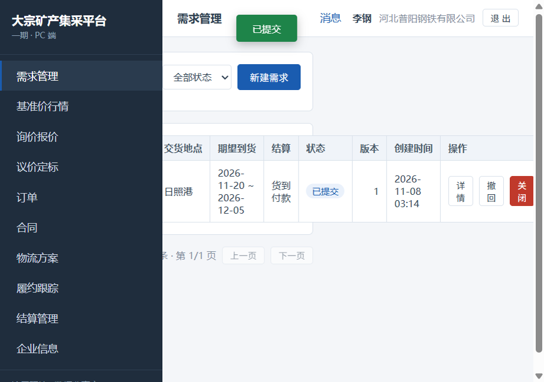
图 4-3 需求提交（已提交）
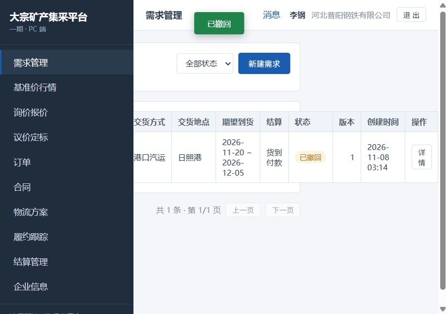
图 4-4 需求撤回（version 2）
4.2 发起询价与揭示比价
1
「询价报价→新建询价」：选择已提交需求单与明细，填询价数量、期望到货日、报价截止（至少当前+2小时且不晚于到货日-7天）、最少响应家数，勾选邀约供应商。
⚠️ 报价截止按服务器时间校验，请预留充足余量（建议比页面显示时间再多留 2 小时以上）。
2
发送询价（SENT）→ 供应商密封报价（QUOTING）→ 到达截止后「揭示比价」查看比价快照。
4.3 议价、定标与订单
1
「议价定标」页对已揭示询价发起议价，供应商应答后「接受」→「定标」生成订单（PENDING_CONFIRM）。
2
供应商确认订单 → 生成合同（PENDING_BUYER）。
4.4 合同签署（电子留痕）
1
需方先签（上传盖章件，系统记录 SHA-256）→ 供方签 → 合同 EFFECTIVE，订单转 PERFORMING。
⚠️ 未完整签署的合同可作废重签（生成新版本 v2）；已生效合同不可作废。
4.5 物流方案与到货质检
1
「物流方案」创建运输方案（分段），指派承运商 → 运单 PENDING_ACCEPT。
2
到货后在「质检」录入质检记录（实收数量/品位），超差自动触发预警。
4.6 结算与付款
1
「结算管理→生成结算单」（默认取最近质检实收数量）→ 供应商确认 → 钢厂确认 → CONFIRMED。
2
「付款登记」登记付款单 → 结算 COMPLETED → 订单可归档导出（zip 含 manifest.json）。
5. 供应商操作（需求池→报价→议价→订单→结算）
5.1 查看脱敏需求池
1
「需求池」仅展示脱敏概要：品种明细、总量、交货方式/区域、期望月份——不展示钢厂名称、价格意向与需求名称。
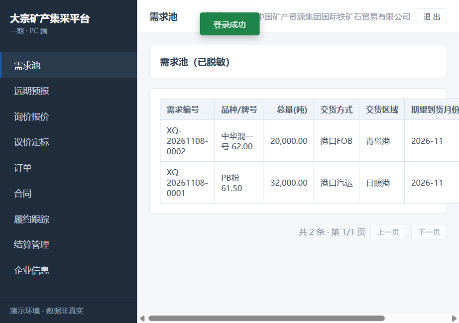
图 5-1 供应商需求池（脱敏）
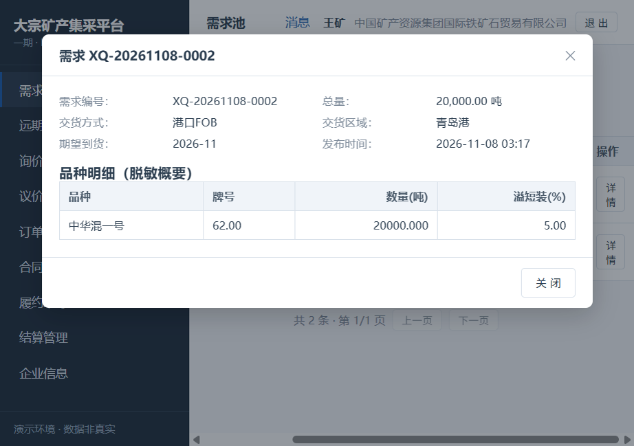
图 5-2 需求详情（脱敏）
5.2 密封报价
1
对收到的询价「报价」：填单价、交货期等，提交后为密封状态（互相不可见）。
2
到达揭示时间后由钢厂揭示比价。
5.3 议价应答与订单确认
1
收到议价邀请后应答（接受/拒绝/还价）。
2
定标后收到订单（PENDING_CONFIRM），核对无误「确认订单」→ 进入待生成合同。
3
「合同」页供方签署（上传盖章件）→ 合同生效。
5.4 结算确认
1
「结算管理」核对结算单（数量/金额）→「确认」→ 等待钢厂确认与付款。
6. 承运商操作（物流方案→运单）
1
被指派后运单进入「待接单」，确认接单 → 待发运。
2
回填「发运」（车船号/发运时间）→ 在途 → 回填「到达」→ 待签收。
3
需方签收后运单 SIGNED，履约时间轴自动记录 WB 节点。
⚠️ 承运商仅可回填发运/到达信息，不可修改数量与金额（越权操作返回 40001）。
7. 全局功能
7.1 消息通知
关键节点（询价送达、报价提交、定标、订单确认、合同签署、质检预警、结算确认、付款登记）均产生站内消息，登录后右上角铃铛可查看。
7.2 履约时间轴
订单详情页「履约时间轴」按时间序展示：定标完成→订单生成→供应商确认→合同生成→双方签署→合同生效→物流方案配置→到货质检→结算单生成→结算确认→付款登记→订单归档。
7.3 归档导出
订单完结后可「归档导出」，系统打包 manifest.json 与全套单据为 zip 下载。
8. 常见问题
| 现象 | 说明与处理 |
|---|---|
| 登录提示"用户名或密码错误" | 核对演示账号与密码（见第1节角色表）。 |
| 新建需求保存提示"明细需完整填写品种/牌号/数量" | 添加明细后须重新选择品种确认绑定再保存（已知交互问题，见测试档案 BUG-02）。 |
| 编辑需求草稿看不到已有明细 | 已知问题（BUG-03）：明细不回显，须重录；数据不会丢失，保存时被兜底拦截。 |
| 需求撤回后找不到"重提"按钮 | 已知问题（BUG-04）：UI 撤回态无重提入口，可联系管理员或等修复；API 支持 WITHDRAWN→SUBMITTED。 |
| 企业信息页显示"平台管理员无企业档案" | 已知问题（BUG-05）：企业用户档案接口结构不匹配，功能修复中。 |
| 询价保存后弹窗未关闭、看不到明显提示 | 多为服务端校验拒绝（如报价截止不足+2小时、晚于到货日-7天），toast 短暂显示后自动消失；请核对报价截止与到货日（已知 UX 问题 BUG-07，与时间语义差耦合）。 |
| 报价截止被提示"至少为当前时间+2小时" | 按服务器时间校验；页面显示时间与服务器存在时区差（BUG-06），建议填写时多预留 2 小时以上。 |
| 找不到品种删除/编辑入口 | 主数据保护设计，无删除端点；编辑接口存在但 UI 未暴露（观察项 OBS-01）。 |
| 状态字典页显示"无流转" | 已知展示缺陷（BUG-01）：前端解析结构与后端不一致，修复中。 |